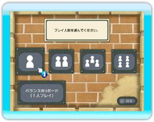
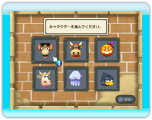
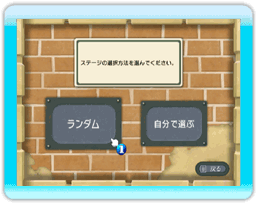
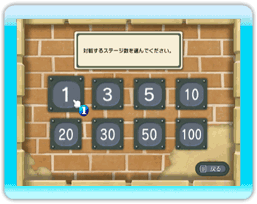
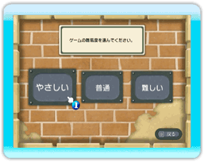

7 |
プレイヤーの設定 |
 |
|
ストーリーモード、フリーモード、対戦モードのどれかを選択すると、プレイヤーの設定画面に進みます。
ここではモードによって、表示される内容が少し違います。
プレイ人数を選びます。1人～4人でのプレイが可能です。
ただし、対戦モードでは1人プレイは選択できません。 また、バランスWiiボードの使用は、1人プレイ専用です。
各プレイヤーが使用するキャラクターを選びます。
Wii本体の似顔絵チャンネルにMiiがいる場合は、登録されたMiiが画面に表示され、使用することができます。
ステージの選択方法を選びます。
「ランダム」はコンピュータが自動で選択します。 「自分で選ぶ」はプレイヤーが選択できます。 ※対戦モードの場合だけ表示される画面です。
対戦するステージ数を選びます。
1ステージから100ステージまで、好きな数を選択できます。 最後のステージを終了すると、表彰シーンに進みます。 ※対戦モードの場合だけ表示される画面です。
ゲームの難易度を3段階から選びます。
難易度によって、ゲームの難しさと、メダルの獲得に必要なポイントが変わります。 |
 |
 |
 |